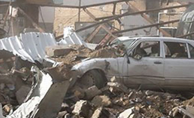
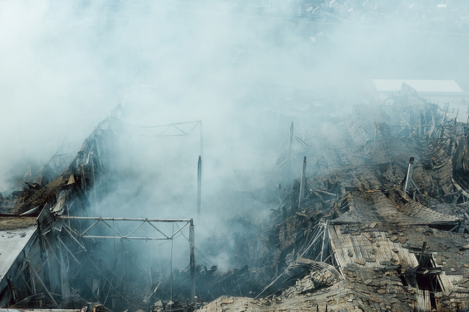

I'm still here... I haven't been found. You will only know where I've been when the earth shakes and the flame fills your lungs, marking a gasp as your final goodbye.
So many inferior creatures disgracing everything that humanity should be. All scratching at the insipid crust of the sycophants who aid the greedy. Pleading for someone to acknowledge their existence long enough so they can forget it themselves. All of you are worthless...
From the beggars, soiling our streets, forcing upstanding citizens to feel for them; to the rich who make the rules for everyone only to screw over those who work hardest for their admiration. The fucking worker bees who go about their days with it all on their backs so they can feel like they serve a purpose to this world. You mean nothing. Your life is worthless. All of you deserve to die. If you don't have the smallest modicum of intelligence to recognize that your life gives nothing to this world and in turn put and end to it yourself, then I will happily do it for you.
The news will explain so many deaths away as accidental. Mechanical failures at factories, leaking gas lines in houses, improper procedure when transporting flammable materials. It's all bullshit. They don't want you to know that the dots are connected. That you should be in constant fear for your shit stain of a life. That you are all burning at my hand.
I have only gotten more proficient and better suited for not being tracked by the police. You will die. Never feel safe.
I could simply turn to chemicals, biological methods, or any other of a litany of methods... but I love the explosives. You know why? You are wiped out. Instantly. It's all you squirming masses deserve. You have no time to reflect on your loved ones. No time to try to understand WHY this is happening to you. I don't give you that satisfaction. You don't deserve it.
You made your choices. You live the way you do. You have corrupted your children. So the result is already made up as well.
When you are riding on the train to work and the children are waiting patiently to arrive at their stop for school. You will feel the pressure compress your body with a massive force as the atmosphere is instantly altered and your air is removed from your lungs. The heat will come long after your death and your remains will be ashes. A symbol of your impact on the world. Instantly forgotten. Instantly nothing. This is why I love the bomb.
You are never safe.